04 / 06 — Mobilier / Design d’objet
ConsoleVena
La libellule, et le paradoxe entre légèreté et résistance.
01 — Concept
La console Vena puise son inspiration dans la structure d'une aile de libellule : un réseau de nervures triangulées qui donne à une membrane quasi impalpable une rigidité remarquable, sans aucun gramme superflu. Transposé en objet de mobilier, ce principe à la fois mécanique et poétique structure la console. Le nom Vena — « veine » en latin — dit l'essentiel : c'est la veine qui structure, qui irrigue, qui donne vie à la forme.
L'aile de la libellule répond par un réseau de nervures triangulées qui donne à une membrane quasi impalpable une rigidité remarquable. Les nervures du plateau reprennent cette logique : elles portent, elles irrigent, elles dessinent.
La console Vena incarne cet équilibre entre légèreté et résistance, entre transparence et structure.
Idée de sketch
C’est ce principe, à la fois mécanique et poétique, que j’ai choisi de transposer en objet de mobilier. Le nom Vena — « veine » en latin — dit l’essentiel : c’est la veine qui structure, qui irrigue, qui donne vie à la forme.
De la libellule, la console retient trois choses : l’aile, transparente et fine ; le corps, long et segmenté ; la nervure, qui renforce l’aile sans l’alourdir. Le plateau reprend la silhouette de l’aile, ses nervures triangulées lui donnent sa rigidité.
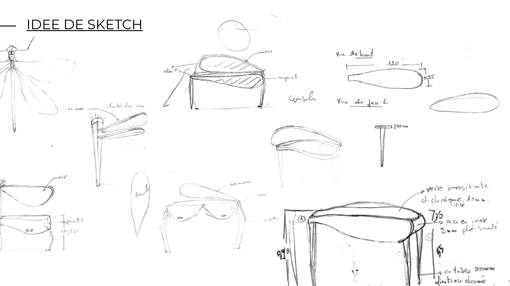
Planche de croquis de recherche : la libellule de profil, la perspective de la console, les vues de haut et de face, la coupe de l’aile et les premières annotations de section — 120 et 35 pour le plateau, 50 mm pour la nervure.
Fiche morphologique & détails techniques
L’aile de la libellule y répond par un réseau de nervures triangulées qui donnent à une membrane quasi impalpable une rigidité remarquable sans aucun gramme superflu. Les nervures du plateau reprennent cette logique : elles portent, elles irriguent, elles dessinent.
La fiche morphologique met en regard le modèle et l’objet : d’un côté la libellule et ses profils d’aile, de l’autre la perspective de la console dont le plateau porte des nervures en laiton.
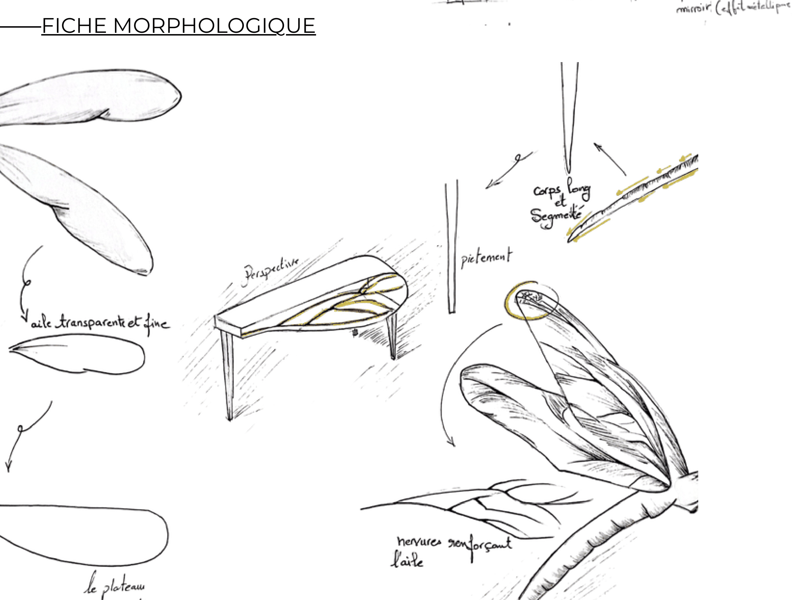
Planche d’analyse : la libellule de profil annotée, le profil en goutte du plateau, la perspective de la console avec ses nervures en laiton, et le détail duCorps segmenté.
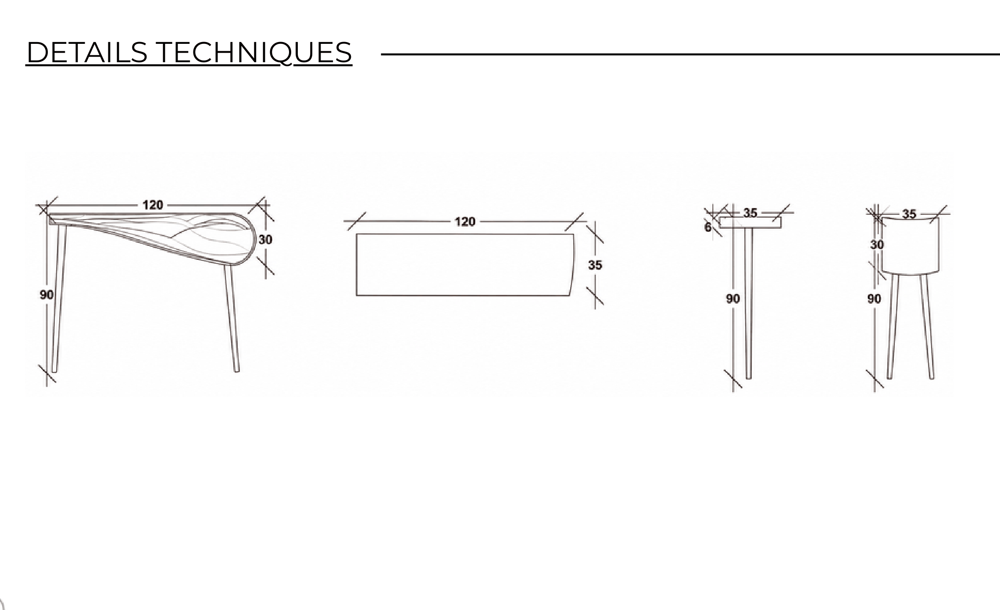
Quatre dessins orthogonaux cotés : élévation générale (120 de long, 90 de haut, 30 d’épaisseur de plateau), vue de plan (120 × 35), vue de face du pied (35 × 90, épaisseur 6) et vue de côté (35 × 90, 30 d’épaisseur).
Les matériaux
La structure : traitement anti-traces sur sa face supérieure, verre feuilleté trempé d’une épaisseur de 22 mm, tube de laiton poli C260 d’un diamètre extérieur de 22 mm. La fixation des pieds au plateau est assurée par un système de platine laiton noyée de 60 × 60 × 8 mm, intégrée dans l’épaisseur du verre.
Les nervures : laiton massif C260, résistant à la corrosion, coulé puis usiné en section de 22 mm, finition polie. Les piétements : même principe, même section, même finition.
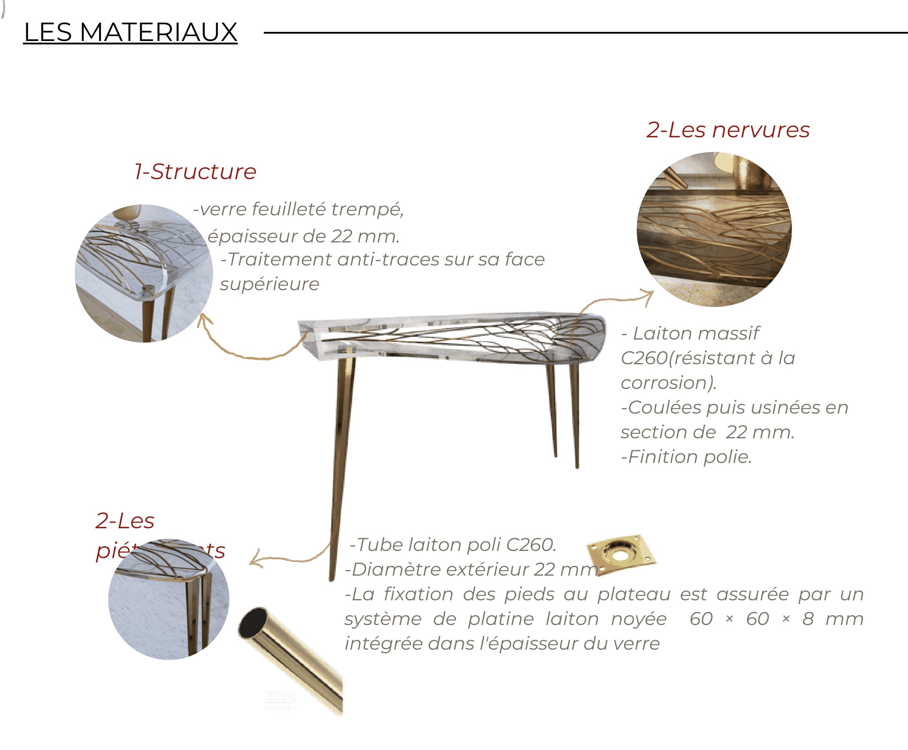
Planche matériaux : le rendu de la console avec ses trois renvois numérotés et leurs pastilles de détail — chant du verre, réseau de nervures en laiton, jonction du pied et platine noyée.
| Élément | Matériau | Mise en œuvre |
|---|---|---|
| 1 — Structure | Verre feuilleté trempé | Épaisseur 22 mm — traitement anti-traces sur la face supérieure |
| 2 — Les nervures | Laiton massif C260 | Résistant à la corrosion — coulées puis usinées en section de 22 mm — finition polie |
| 2 — Les piétements | Tube de laiton poli C260 | Diamètre extérieur 22 mm — fixation par platine laiton noyée 60 × 60 × 8 mm, intégrée dans l’épaisseur du verre |
Le C260 est un laiton à faible teneur en zinc, retenu pour sa résistance à la corrosion et sa tenue au polissage.
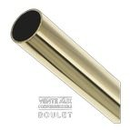
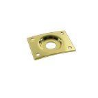
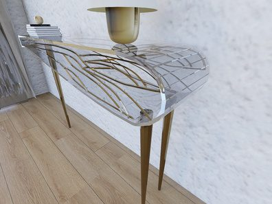
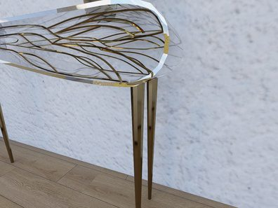
Vues
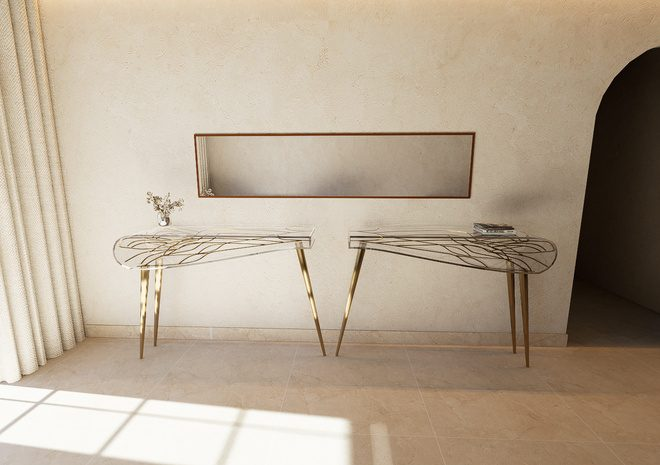
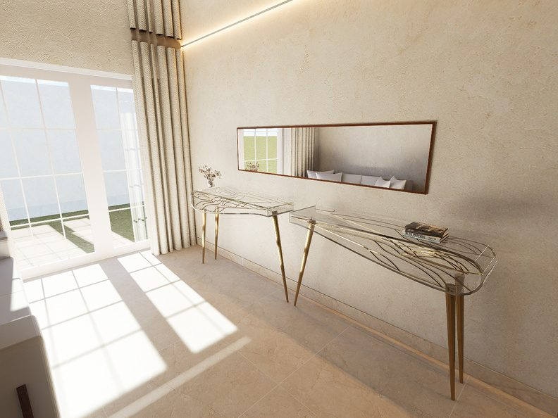
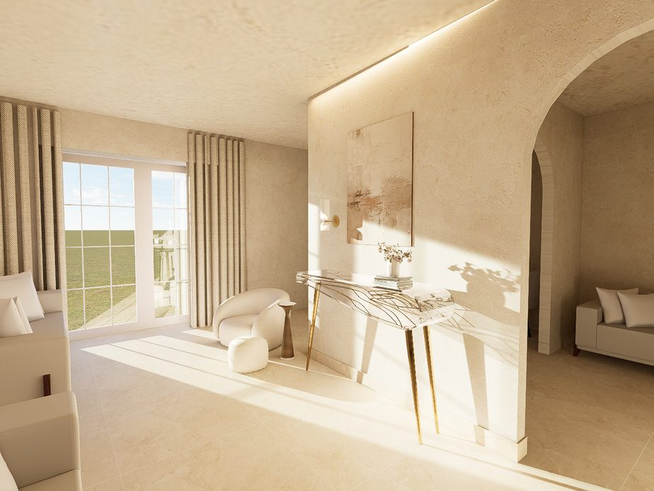
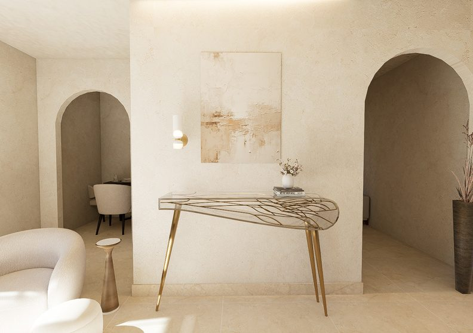

04 — Contact